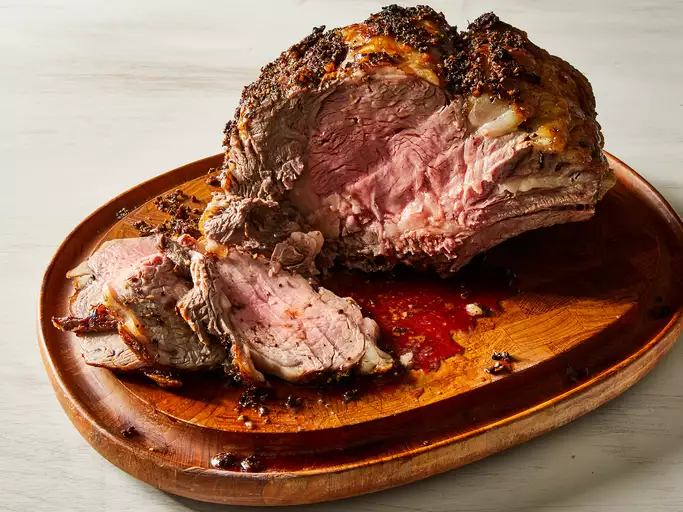

A succulent and flavorful centerpiece, garlic prime rib is a timeless dish
perfect for special occasions. Coated in a savory garlic and herb crust,
this tender, juicy cut of beef is slow-roasted to perfection, ensuring a
beautifully caramelized exterior and a melt-in-your-mouth interior. Serve
it with au jus and your favorite sides for a meal that’s as impressive as
it is delicious.
- 1 (10 pound) prime rib roast
- 10 cloves garlic, minced
- 2 tablespoons olive oil
- 2 teaspoons salt
- 2 teaspoons ground black pepper
- 2 teaspoons dried thyme
- Gather all ingredients for marinade.
-
Mix garlic, olive oil, salt, pepper, and thyme together in a small bowl.
-
Place roast in a roasting pan with the fatty side up. Spread mixture
over the top of roast; let roast sit out until it is at room
temperature, no longer than 1 hour.
- Preheat the oven to 500 degrees F (260 degrees C).
-
Bake roast in the preheated oven for 30 minutes; reduce the temperature
to 325 degrees F (165 degrees C), and continue roasting for an
additional 60 to 75 minutes. The internal temperature of the roast
should be at 135 degrees F (57 degrees C) for medium rare.
-
Allow roast to rest for 10 or 15 minutes before carving so the meat can
retain its juices.